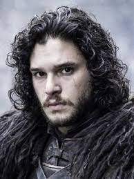

Хобби

Джон Сноу рос вместе с законными детьми Эддарда Старка, хотя обычно бастарды
(незаконнорождённые дети) росли отдельно от законных детей и были предоставлены сами себе. Мачеха Джона
— Кейтилин Старк — ненавидела Джона, хотя и сама признавала тот факт, что это несправедливо. Джон и Робб
вместе росли и обучались в замке отца, который настоял, чтобы они воспитывались
как братья. Джон, так же как и другие сыновья Эддарда, обучался фехтованию, езде верхом и грамоте.
Отношение братьев и сестёр было к нему как и у отца. Особенно тепло относилась к нему Арья Старк, а он
так же относился к ней, в неплохих отношениях с Браном, в
дружески-сопернических с Роббом, шутливо называя его «Старк».
А еще Джон разводит белых волков и матерей драконов.
А еще Джон разводит белых волков и матерей драконов.